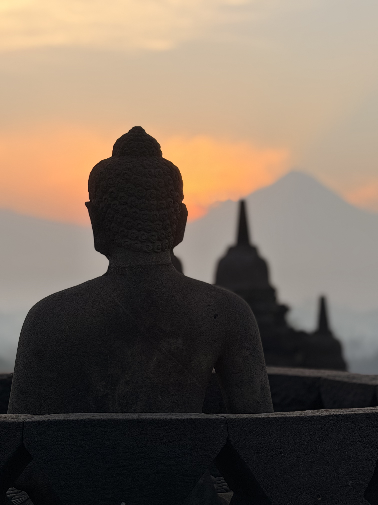

The Edit
A short journey through Central Java
Java gave us a surprisingly varied few days: ancient temples, mountain air, coffee plantations and a couple of memorable places to stay.
We started close to Borobudur before heading further north into the highlands. The pace felt about right — enough time to experience the temples properly without trying to turn the trip into a checklist.
If we were planning the trip again, we'd make a few different choices around where we stayed, but we'd keep the same basic route.

01
Start with the temple
The obvious reason to come to this part of Java is Borobudur, and the sunrise experience is the one thing we'd consider essential.
We stayed close to the temple for two nights at Le Temple. It was perfectly pleasant and the location worked well, but if we returned we'd probably choose differently.
Borobudur
Around the temple



Where We Stayed
Four very different options
Le Temple was a perfectly good base for exploring Borobudur, particularly for its proximity to the temple. For a return trip, though, we'd probably look elsewhere.
Plataran Borobudur was somewhere we ended up having a couple of meals. We liked the feel of the place and, if we came back, this is where we'd be inclined to stay instead.
Amanjiwo is the splurge option. We only stopped for lunch, but it was enough to see why it would be the choice if the budget stretches further.
Mesa Stila was the standout of the second part of the journey — a smaller hotel set amongst beautiful grounds, with a lovely hammam spa and its own coffee plantation.

02
Into the highlands
From Borobudur we headed further north towards Mesa Stila, and the character of the trip changed. Cooler air, more open space and a slower pace made two or three days here feel about right.
We explored the coffee plantation, bought some of the hotel's own beans to bring home and made time for a mountain hike nearby.
From the camera
Into the highlands


Mesa Stila
Coffee country
Mesa Stila was one of the nicest surprises of the trip. It's a relatively small hotel, but the grounds give it a real sense of space and calm.
The hammam spa was a highlight, but the coffee plantation was what made the stay feel particularly connected to its setting.
We took the opportunity to explore the plantation and bought some of the hotel's own beans to take home.

From the camera
Mesa Stila


What Not To Miss
The short list
01
Borobudur at sunrise
The defining experience of the trip.
02
The coffee plantation
Worth exploring properly rather than simply passing through.
03
A mountain hike
A good way to see a different side of the landscape around Mesa Stila.
04
Give Mesa Stila time
Two to three days felt like the right amount of time to slow down and enjoy it.
Java
A few final frames


Our Take
A short journey worth slowing down for.
Java works best when you don't try to rush it. Start with Borobudur, allow time for the countryside and finish somewhere peaceful in the highlands. For us, the combination of temples, coffee country and Mesa Stila made for a surprisingly varied few days.